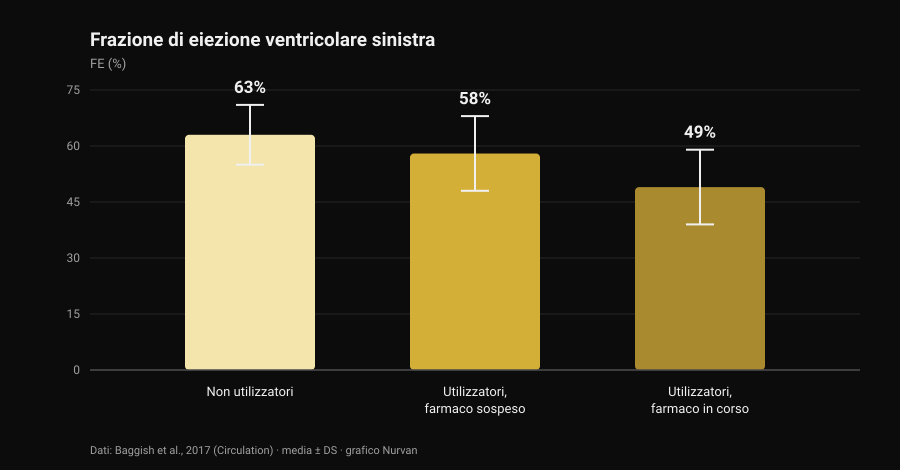
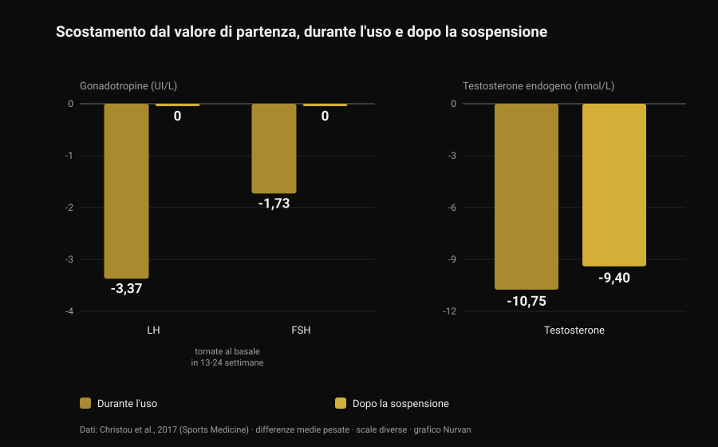

Steroidi anabolizzanti: effetti collaterali e rischi
Un post passato nella mia bacheca dice una cosa corretta e poco popolare: gli steroidi anabolizzanti funzionano, ma non puoi scegliere solo gli effetti che vuoi. È vero, e la letteratura lo quantifica molto meglio di quanto possa fare una slide. Ho letto otto lavori indicizzati per capire quanto costa quel pacchetto completo — e il numero che mi ha colpito di più non riguarda il cuore, riguarda i tempi di ritorno alla normalità.

In breve
- Che funzionino non è in discussione. Dieci settimane di dosi sovrafisiologiche di testosterone più allenamento: +6,1 kg di massa magra, +22 kg di panca, +38 kg di squat. Anche chi non si allenava cresceva (Bhasin et al., 1996).
- Il recettore degli androgeni non sta solo nel muscolo. Nei registri danesi acne, ginecomastia e disfunzione erettile riguardano ciascuna più del 10% degli utilizzatori (Horwitz et al., 2019).
- Il cuore è l'organo con i dati migliori. Frazione di eiezione 52% negli utilizzatori contro 63% nei non utilizzatori, e 49% in chi aveva il farmaco in corso (Baggish et al., 2017).
- Tornare indietro è più lento di come lo si racconta. Dopo lo stop LH e FSH risalgono in 13-24 settimane, ma il testosterone prodotto dal corpo era ancora 9,4 nmol/L sotto il basale a 16 settimane (meta-analisi su 33 studi, Christou et al., 2017).
- Per una minoranza non torna del tutto. Su 19 ex utilizzatori, 5 avevano testosterone sotto 200 ng/dL dopo 3-26 mesi di astinenza; 7 su 24 hanno avuto un episodio depressivo maggiore durante la sospensione (Kanayama et al., 2015).
"Funzionano" non è la domanda interessante
Questa parte è chiusa da trent'anni. Nel 1996 quarantatré uomini sono stati assegnati a caso a quattro gruppi: placebo o testosterone, con o senza allenamento. Chi riceveva dosi sovrafisiologiche di testosterone e si allenava ha guadagnato 6,1 kg di massa magra in dieci settimane, con l'area del tricipite in aumento di 501 mm² e quella del quadricipite di 1.174 mm²; panca +22 kg, squat +38 kg.
Il dettaglio più istruttivo è un altro: anche chi non si allenava cresceva. Nel gruppo testosterone senza esercizio l'area del tricipite è aumentata di 424 mm², mentre nel gruppo placebo senza esercizio è diminuita di 81 mm². Il farmaco agisce indipendentemente dallo stimolo, e questo spiega quanto l'uso sia diffuso: la prevalenza a vita stimata è intorno al 6,4% negli uomini e all'1,6% nelle donne (Nieschlag e Vorona, 2015).
Nello stesso trial, per onestà, umore e comportamento non sono risultati alterati in nessun gruppo. Ma dieci settimane sotto controllo medico non sono dieci anni di cicli autogestiti: è esattamente la differenza di cui parla il resto dell'articolo.
Perché non puoi scegliere solo gli effetti che vuoi
Il recettore degli androgeni è uno, e non è un recettore del muscolo. È espresso nel miocardio, nel fegato, nella pelle, nel follicolo del capello, nella prostata, nell'osso, nella laringe e nel cervello. Quando il livello di androgeni in circolo sale molto sopra il normale, sale per tutti questi tessuti insieme.
Il rapporto "anabolico/androgeno" delle tabelle che girano online nasce da test sui rodenti e non si traduce in una selettività pulita negli esseri umani. La verifica empirica sta nei registri: nella coorte danese di Horwitz e colleghi, acne, ginecomastia (crescita del tessuto mammario nell'uomo) e disfunzione erettile riguardavano ciascuna più del 10% degli utilizzatori. Nessuno dei tre è un effetto che qualcuno cerchi.
Nelle donne alcune voci non si cancellano: acne e irsutismo sono frequenti, e l'abbassamento della voce è irreversibile (Nieschlag e Vorona, 2015). La revisione più recente lo scrive chiaramente: la maggior parte degli effetti indesiderati è lieve e reversibile, ma alcuni possono causare danno permanente o essere potenzialmente letali (Linhares et al., 2022).
La domanda utile, quindi, non è "quali effetti voglio", ma quali effetti sono disposto a non poter scegliere. Sul rapporto fra androgeni e capelli abbiamo scritto a parte, parlando di creatina e caduta dei capelli.
Il cuore: l'organo con i dati migliori
Lo studio più informativo è trasversale: 140 sollevatori fra i 34 e i 54 anni — 86 con almeno due anni cumulativi di uso, 54 non utilizzatori — valutati con ecocardiografia e angio-TC coronarica.

La frazione di eiezione — la quota di sangue che il ventricolo sinistro espelle a ogni battito — era in media 52% negli utilizzatori contro 63% nei non utilizzatori. Ridotta anche la funzione diastolica, cioè la capacità del ventricolo di rilassarsi e riempirsi (velocità di rilassamento precoce 9,3 contro 11,1 cm/s). Gli autori la chiamano con il suo nome: disfunzione miocardica.
Dentro il gruppo degli utilizzatori c'è il dato da tenere: chi aveva il farmaco in corso stava a 49%, chi era sospeso a 58%. La funzione di pompa, quindi, recupera almeno in parte quando si smette.
Le coronarie no. Il volume di placca era mediano 3 mL negli utilizzatori contro 0 mL nei non utilizzatori, e cresceva con la durata cumulativa dell'uso: ogni dieci anni valevano 0,60 deviazioni standard in più di carico ateromasico. È la differenza che i riassunti social non fanno quasi mai: la contrattilità va e viene, la placca è un deposito, e i depositi non si scaricano a fine ciclo.
Sul fronte degli eventi clinici, un registro danese di 1.189 utilizzatori seguiti circa undici anni contro 59.450 controlli riporta infarto con rapporto di rischio aggiustato 3,00 e cardiomiopatia 8,90 (Windfeld-Mathiasen et al., 2025). Ne abbiamo parlato nel dettaglio, insieme a cosa succede ai lipidi, in testosterone e colesterolo.
Quanto tempo serve davvero per tornare indietro
È la parte in cui la divulgazione da palestra sbaglia di più, ed è anche quella con i dati più solidi: una meta-analisi su 33 studi e 3.879 partecipanti, di cui 1.766 utilizzatori.

Durante l'uso l'asse che governa la produzione naturale di testosterone si spegne: LH −3,37 UI/L, FSH −1,73 UI/L, testosterone prodotto dal corpo −10,75 nmol/L rispetto al basale. Prevedibile: il cervello vede androgeni in abbondanza e smette di chiederne.
Il punto è cosa succede dopo. Le gonadotropine — gli ormoni con cui l'ipofisi dà l'ordine ai testicoli — tornano ai valori di partenza in 13-24 settimane. Il testosterone no: a 16 settimane dalla sospensione era ancora 9,4 nmol/L sotto il livello di partenza. L'ordine riparte prima che la fabbrica torni a produrre.
Su chi ha smesso da tempo i dati sono ancora più diretti. Diciannove ex utilizzatori a lungo termine non in terapia, confrontati con 36 sollevatori che non avevano mai usato nulla, avevano testosterone inferiore di 131 ng/dL, volume testicolare inferiore di 2,3 mL e desiderio sessuale più basso di 2,4 punti su 10; cinque erano sotto 200 ng/dL dopo un'astinenza fra 3 e 26 mesi. E c'è la parte che non finisce quasi mai nelle slide: sui 24 ex utilizzatori dello studio, 7 (29%) hanno avuto un episodio depressivo maggiore durante la sospensione, quattro dei quali mai in nessun altro momento della vita, e due non hanno recuperato libido o funzione erettile nemmeno con una terapia sostitutiva adeguata (Kanayama et al., 2015).
Sulla fertilità il quadro è coerente: alterazioni di numero, forma e motilità degli spermatozoi, riduzione del volume testicolare e, nelle donne, clitoromegalia, irregolarità mestruali e subfertilità (Christou et al., 2017). La soppressione della spermatogenesi è descritta come reversibile, con una nota importante: se non recupera, è possibile che sia riemerso un problema di fertilità preesistente (Nieschlag e Vorona, 2015).
Mortalità e ricoveri: cosa dicono i registri
Sul lungo periodo esistono solo dati di popolazione, perché un esperimento controllato su questi dosaggi non supererebbe nessun comitato etico.
Nella coorte danese, 545 uomini positivi a un test antidoping in palestra sono stati confrontati con 5.450 controlli appaiati: mortalità tre volte più alta (rapporto di rischio 3,0; IC 95% 1,3-7,0) e contatti ospedalieri annui mediani 0,81 contro 0,36. Il risultato è stato replicato in una seconda coorte di 644 uomini che avevano rifiutato il test (Horwitz et al., 2019).
Un avvertimento, altrimenti il numero diventa uno slogan: sono studi osservazionali, e chi usa steroidi differisce dai controlli anche per altre sostanze, altre abitudini e una diversa propensione al rischio. Il "tre volte" non è il contributo isolato della molecola — è però la cosa più vicina a un bilancio reale che abbiamo.
Cosa dice davvero la ricerca
"Gli steroidi anabolizzanti funzionano" Trial randomizzato: massa magra +6,1 kg in dieci settimane con allenamento, e crescita muscolare anche senza allenarsi.
"Non puoi esporre selettivamente il muscolo: anabolico e androgeno non si separano" Un solo recettore su molti tessuti, e nei registri acne, ginecomastia e disfunzione erettile oltre il 10% ciascuna. Nelle donne l'abbassamento della voce è irreversibile.
"Il rischio non è binario: dipende da dose, durata, molecola e risposta individuale" Dose e durata contano, ed è documentato. Ma la risposta individuale è proprio la variabile che non si può conoscere prima: è un rischio, non un parametro da impostare.
"Più farmacologia, più variabili da gestire" "Gestire" presuppone che tutto ciò che conta sia misurabile e correggibile. Il segnale più forte dei registri è la cardiomiopatia, e il reperto che scala con l'esposizione è un deposito nelle coronarie: nessuno dei due si corregge con un prelievo.
"Finito il ciclo torni come prima" Testosterone ancora 9,4 nmol/L sotto il basale a 16 settimane dallo stop; cinque ex utilizzatori su 19 sotto 200 ng/dL dopo mesi; due su 24 senza recupero della funzione sessuale nemmeno in terapia.
"Se sei giovane e sano e fai gli esami, non rischi" Le coorti danesi sono fatte proprio di frequentatori di palestra giovani: mortalità tripla, ricoveri più che doppi, cardiomiopatia con rischio quasi nove volte superiore.
"Un uso controllato azzera il rischio" Studi randomizzati su questi dosaggi non esistono e non esisteranno. Chi afferma il contrario sta usando l'assenza di dati come prova di sicurezza.
Come applicarlo
- Se stai valutando l'uso, cambia la domanda. Non "quanto serve per crescere", ma "quali effetti sono disposto a non poter scegliere": ginecomastia, acne, disfunzione erettile e placca coronarica non sono opzioni che si disattivano.
- Se usi o hai usato, dillo al medico. È l'informazione che cambia la lettura di qualsiasi esame, e molti medici non la chiedono spontaneamente: tocca a te portarla.
- Riconosci i sintomi della sospensione. Calo del desiderio, difficoltà erettile e umore nero dopo lo stop non sono mancanza di carattere: nello studio di Kanayama il 29% ha avuto un episodio depressivo maggiore in quella fase. È una condizione medica, e si tratta.
- Se pensi ai figli, parlane prima. La spermatogenesi si sopprime durante l'uso e recupera in tempi lunghi e variabili: una valutazione andrologica preventiva vale più di qualsiasi protocollo letto su un forum.
- Non confondere la terapia prescritta con l'uso da palestra, e guarda le serie storiche invece del singolo referto. Pressione, emocromo, lipidi e composizione corporea dicono qualcosa su più anni, non su una settimana. Il confronto fra terapia e ciclo è in testosterone e colesterolo.
Prova Nurvan — esami, misure e carichi sulla stessa linea del tempo
Se segui la tua salute nel tempo, il problema pratico è che i referti stanno sparsi fra email, cartelle e PDF. Su Nurvan carichi gli esami del sangue e vedi l'andamento di ogni voce su una linea del tempo, con accanto negli stessi mesi i carichi, il RIR e le misure corporee: quando vai dal medico porti la serie storica, non l'ultimo foglio.
Domande frequenti
Quali sono gli effetti collaterali più comuni degli steroidi anabolizzanti?
Nei registri di popolazione i più frequenti sono acne, ginecomastia e disfunzione erettile, ciascuno in più del 10% degli utilizzatori. A questi si aggiungono atrofia testicolare, soppressione della produzione naturale di testosterone e, sul piano cardiaco, riduzione della funzione di pompa e accumulo di placca coronarica.
Quanto tempo serve per riprendersi dopo aver smesso?
Nella meta-analisi su 33 studi le gonadotropine tornano ai valori di partenza in 13-24 settimane, ma il testosterone prodotto dal corpo era ancora 9,4 nmol/L sotto il basale a 16 settimane dalla sospensione. In una parte degli ex utilizzatori i valori restano bassi per mesi: cinque su diciannove erano sotto 200 ng/dL dopo un'astinenza fra 3 e 26 mesi.
Gli steroidi danneggiano il cuore in modo permanente?
Le due cose vanno separate. La funzione contrattile sembra recuperare almeno in parte: nel confronto fra utilizzatori, chi era sospeso aveva una frazione di eiezione del 58% contro il 49% di chi era in corso. La placca coronarica, invece, cresce con gli anni cumulativi di uso e non è un parametro che si azzera smettendo.
Esiste uno steroide anabolizzante sicuro?
No, e non esistono studi randomizzati su questi dosaggi che possano dimostrarlo: i vincoli etici impediscono di esporre volontari a regimi potenzialmente tossici. Le differenze fra molecole sono reali — per esempio sui lipidi la via orale pesa molto più di quella iniettabile — ma sono differenze di entità del danno, non di presenza o assenza.
Leggi anche
- Testosterone e colesterolo: cosa dicono gli studi — i numeri su HDL, LDL e apoB, con la differenza fra terapia e ciclo.
- La creatina fa cadere i capelli? — il meccanismo del DHT spiegato per esteso, verificato sugli studi.
- Tier list integratori forza — cosa ha prove solide, in ordine di evidenza, senza farmacologia.
Fonti
- Bhasin S, Storer TW, Berman N, Callegari C, Clevenger B, Phillips J, Bunnell TJ, Tricker R, Shirazi A, Casaburi R, 1996. The effects of supraphysiologic doses of testosterone on muscle size and strength in normal men. New England Journal of Medicine 335(1):1-7. PMID 8637535 · DOI 10.1056/NEJM199607043350101
- Baggish AL, Weiner RB, Kanayama G, Hudson JI, Lu MT, Hoffmann U, Pope HG, 2017. Cardiovascular Toxicity of Illicit Anabolic-Androgenic Steroid Use. Circulation 135(21):1991-2002. PMID 28533317 · DOI 10.1161/CIRCULATIONAHA.116.026945
- Christou MA, Christou PA, Markozannes G, Tsatsoulis A, Mastorakos G, Tigas S, 2017. Effects of Anabolic Androgenic Steroids on the Reproductive System of Athletes and Recreational Users: A Systematic Review and Meta-Analysis. Sports Medicine 47(9):1869-1883. PMID 28258581 · DOI 10.1007/s40279-017-0709-z
- Kanayama G, Hudson JI, DeLuca J, Isaacs S, Baggish A, Weiner R, Bhasin S, Pope HG, 2015. Prolonged hypogonadism in males following withdrawal from anabolic-androgenic steroids: an under-recognized problem. Addiction 110(5):823-31. PMID 25598171 · DOI 10.1111/add.12850
- Horwitz H, Andersen JT, Dalhoff KP, 2019. Health consequences of androgenic anabolic steroid use. Journal of Internal Medicine 285(3):333-340. PMID 30460728 · DOI 10.1111/joim.12850
- Nieschlag E, Vorona E, 2015. MECHANISMS IN ENDOCRINOLOGY: Medical consequences of doping with anabolic androgenic steroids: effects on reproductive functions. European Journal of Endocrinology 173(2):R47-58. PMID 25805894 · DOI 10.1530/EJE-15-0080
- Linhares BL, Miranda EP, Cintra AR, Reges R, Torres LO, 2022. Use, Misuse and Abuse of Testosterone and Other Androgens. Sexual Medicine Reviews 10(4):583-595. PMID 34887237 · DOI 10.1016/j.sxmr.2021.10.002
- Windfeld-Mathiasen J, Heerfordt IM, Dalhoff KP, Andersen JT, Andersen MA, Johansson KS, Biering-Sørensen T, Olsen FJ, Horwitz H, 2025. Cardiovascular Disease in Anabolic Androgenic Steroid Users. Circulation 151(12):828-834. PMID 39945117 · DOI 10.1161/CIRCULATIONAHA.124.071117
Riferimenti bibliografici recuperati tramite PubMed. Spunto iniziale: il post di built4mayhem (Project Mayhem) del 25 settembre 2026, post originale. Del post sono stati letti solo autore, data e didascalia: nessun testo e nessuna immagine sono stati riprodotti, e le slide del carosello non sono state scaricate né viste. Il tema è stato riscritto da zero risalendo agli studi primari e verificandoli uno per uno.
Giammaria Loi è il fondatore di Nurvan. Si allena con i pesi dal 2012, lavora come personal trainer e coach certificato FIPE dal 2013 e gareggia nel powerlifting a livello nazionale dal 2018. Ogni articolo che firma parte dagli studi scientifici e arriva a ciò che funziona davvero in palestra.
Nota: contenuto informativo, non sostituisce il parere di un medico. Questo articolo descrive i rischi documentati in letteratura e non contiene indicazioni di dosaggio, molecole o protocolli: non incoraggia in alcun modo l'uso di queste sostanze. L'uso non medico di steroidi anabolizzanti è vietato nello sport e, in molti Paesi, illegale. Se usi o hai usato queste sostanze, o se stai valutando una terapia ormonale, parlane con un medico.